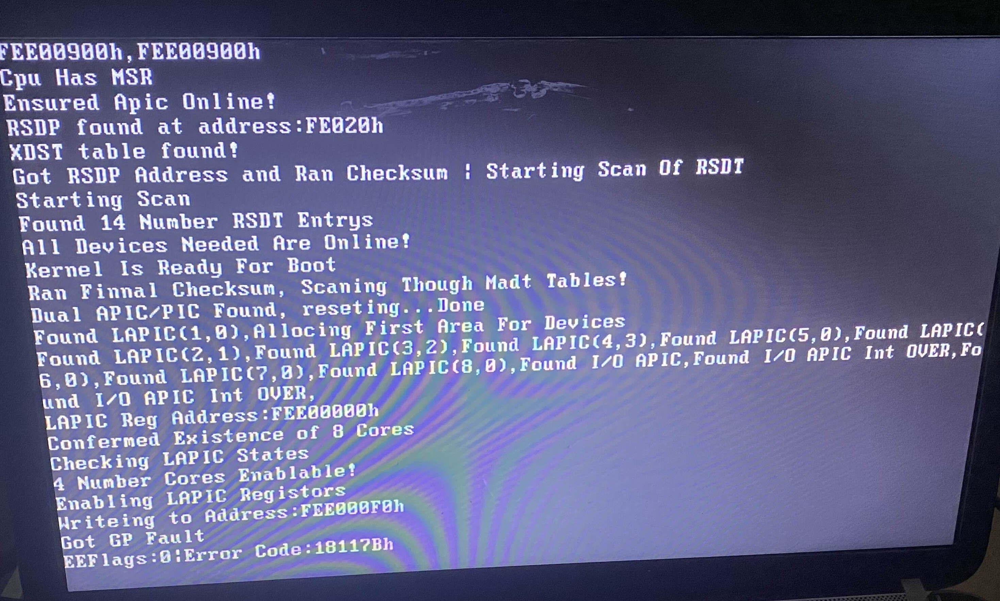

So, for the last few weeks, I've been working on a OS. I managed to get it to work on QEMU without issue. So, I wanted to try out my OS on real hardware. My thought process was "How hard could it be? It already works on QEMU." Oh how wrong I was...
The first issue I encountered was my bootloader. Long story short, the bootloader didn't like me booting off of a USB drive. I ended up using unreal mode to load a sector then copy it to the kernel space.
After I started the kernel, I was picking up a GP Fault on my emergency exception handler (It's used if an exception is called and nothing is done). This confused me, as at this point the only segment that was setup was the kernel segment.
After the GP Fault started showing up I built a debugging handler for it.
I'd found that the second I write to a LAPIC register through MMIO, BOOM! GP Fault.
By now I was more confused than anything. I just couldn't understand what the difference was. By now I added support for XSDP and was seeing nothing different. So, I pulled out the five thousand page Intel documentation. After a whole day without finding anything, finally I'd found some documentation that gave me an idea. It was so stupid, but I wondered if my computer wasn't emulating the old version of the APIC (I'd add a link to this but I cant find much on x2apic).
The primary difference was the version of tables and compatibility. It turns out that the laptop I was using as a test bed just didn't seem to be up to Intel's standard for backwards compatibility. So, I started implementing x2apic. Finally, after 3 hours, I managed to add support for x2apic (hardest part was switching to MSRs). And finally after about 2 days at this point, I got a different error.
Suddenly after attempting to enable another core using the LAPIC, it seemed to have suddenly disabled x2apic? Sadly, I didn't get a photo of the error. Shortly after this, I realised what had happened.
The cores were starting! Although if you know about how cores normally start, you'd know you change the LAPIC register and that the MSRs are core independent... You might know what happened, but just in case you don't know what happened, to enable x2apic you set bit 10 in the MSR. I check for this bit when reading and writing to LAPIC registers, so it wasn't being set across the whole computer! This made the cores try to use the unsupported way of using the LAPIC registers.
When making a kernel, assume NOTHING is up to standard. Although this experience was painful to figure out, I think it was for the best. I'd rather find out now when only parts of the kernel are done then have to rebuild the whole kernel from scratch.
That's the blog, hope you enjoyed the read and maybe it helped someone.
(Sorry for the bad site, I'm no UI designer)